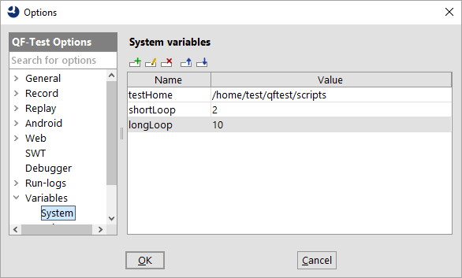
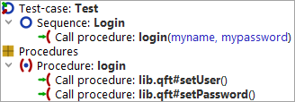

| Version 6.0.3 |
 Video: 'Variables' .
Video: 'Variables' .
Variables are the primary means to add flexibility to a test-suite. Though they are used mainly as parameters for 'Procedures', they are also useful in many other cases.
Variable syntax can be used in almost every attribute of the nodes of a suite, except for boolean values (check boxes). There are three versions of variable references:
$(varname) expands to the value of some
previously defined variable.
${group:name} accesses external data from a resource bundle or
property file. The groups system and qftest are always
defined and have a special meaning (see section 6.5).
$[expression] evaluates some mathematical expressions.
To understand the reasons of why and how variables are defined in multiple places, you first have to learn about how the values of variables are determined.
Each set of variable definitions, called bindings, is placed on
one of two stacks of bindings. One stack is used for actual - or
direct - definitions and one for fallback bindings or default
values. When a variable's value is requested via
$(...), QF-Test first searches the stack of direct
bindings from top to bottom, then the stack of fallbacks, also top down. The
first value found is used. If there is no binding at all for a
name, an UnboundVariableException is thrown unless you use the special syntax
${default:varname:defaultvalue} to
provide a default value for this case as described in section 6.5.
|
|
|
||||||||||||||
|
| Figure 6.1: Direct and fallback bindings | ||||||||||||||
This mechanism supports recursive or self-referencing variable
definitions. For example, setting a variable named
classpath to the value
some/path/archive.jar:$(classpath) will extend a binding
for classpath with lower precedence. If no such binding
exists, a RecursiveVariableException is thrown.
Variables are defined in various places with different orders of precedence. You define a variable by adding a row to the appropriate table with the name and value of the variable in the respective columns.
|
|  | ||
|
| Figure 6.2: System variables | ||
Four sets of variable definitions are accessible from the global options:
-variable <name>=<value> argument which can be used
multiple times. These bindings are placed above the suite
bindings on the direct bindings stack, so they override the
bindings of the suite. For example, a variable
count=1 can be defined for the suite and used as
$(count) for the 'Number of iterations' of a
'Loop' node for quick trial runs. Then you can use
qftest -batch -variable count=100 ... for the
actual testing. The command line bindings are accessible mainly
for your information, but you can also edit them for
experimentation.
-test <n>|<ID>
command line argument.
The rest of the variable definitions are part of the test-suite itself:
Consider the following example:
|
|  | ||
|
| Figure 6.3: Variable example | ||
The 'Sequence' "Login" contains a 'Procedure call' of the
'Procedure' "login" which expects two parameters: user
and password. The 'Procedure's' default bindings are
user=username and password=pwd. The
'Procedure call' overrides these with user=myname and
password=mypassword.
The "login" 'Procedure' itself holds 'Procedure calls' of 'Procedures'
in another test-suite called "lib.qft" to write the user and password
to some GUI components. We assume that the 'Procedures' in this
library have most parameters in common, so they don't define default
values themselves but in the suite bindings of "lib.qft" where they
are set to user=libuser and password=libpwd.
This is useful for creating and editing the procedures in the library
since they can all be executed and tried out separately without having
to define 'Procedure calls'.
The following diagram shows the State of the binding stacks during the execution of the 'Procedure' "lib.qft#setUser":
|
|
|
||||||||||||||||||
|
| Figure 6.4: Variable bindings example | ||||||||||||||||||
The important thing to note here is that the 'Procedure call' to
"lib.qft#setUser" inside the 'Procedure' "login" does not need to
define the user parameter again, the parameter is "passed
through". As a rule of thumb, when calling one 'Procedure' from
another, define a parameter value in the 'Procedure call' if and only
if the value has not been explicitly defined yet or you want to pass a
different value.
Often it is necessary to fetch some kind of data from the SUT's GUI to use it as test input.
QF-Test offers a special set of query nodes for this kind of task, available via »Insert«-»Miscellaneous«:
The retrieved values are assigned to local or global variables that can be declared in the fetch node.
Instead of inserting fetch nodes by hand they can easily be created by first recording a mouse click node the the respective component and then use the transform operation to convert the same to the fetch node you need.
External data is made available by the 'Load resources' and
'Load properties' nodes. These assign a group name to a set
of definitions from a resource bundle or properties file. To access
the value of the definition for name, use the syntax
${group:name}.
When run in batch mode (see section 1.7) QF-Test clears the resources and
properties before the execution of each test given with the -test <n>|<ID> command line
argument. In normal mode QF-Test keeps them around to ease building a suite, but for a true
trial run you should clear them via the »Run«-»Clear resources and properties« menu first.
Some special group names are predefined and always available:
system gives access to the system
properties of the Java VM (for programmers:
java.lang.System.getProperties()),
e.g. ${system:user.home} for the user's home
directory or ${system:java.class.path} for the
CLASSPATH with which QF-Test was started. Which names are defined in the group
system depends on the utilised JDK.PATH, CLASSPATH
or JAVA_HOME (practically all systems QF-Test runs on), these environment
variables can be accessed with the help of the group
env.
default. The
syntax is ${default:varname:defaultvalue}. This is extremely useful for
things like generic components or in almost every place where there is a reasonable
default for a variable because the default value is then tightly coupled with the
use of the variable and doesn't have to be specified at 'Sequence' or test-suite
level. Of course you should only use this syntax if the variable lookup in question is
more or less unique. If you are using the same variable with the same default in
different places it is preferable to use normal syntax and explicitly set the default,
so that the default for all values can be changed in a single place.
id can be used to reference QF-Test component IDs. Values in this group
simply expand to themselves, i.e. "${id:whatever}" expands to "whatever". Though
QF-Test component IDs can be referenced without the help of this group, its use increases the
readability of tests. Most notably however, QF-Test component ID references in this group will be updated
automatically in case the referenced target component gets moved or its QF-Test ID changed.
idlocal is similar to the id group but includes the path to the current
test-suite, i.e. "${idlocal:x}" expands to "path/to/current/suite/suite.qft#x". This enforces use of the
component referenced in the suite that is current at the time of expansion, irrespective of whether there
is a component with the same %attId; in the target suite of a procedure call.
quoteitem group you can conveniently escape special characters like
'@', '&' and '%' in the name of a textual sub-item index to prevent it from being
treated as several items, e.g. "${quoteitem:user@host.org}" will result in
"user\@host.org".
quoteregex with its alias quoteregexp can be used to
escape characters with special meaning in regular expressions. This is often useful when
building regular expressions dynamically or when referencing subitems with special
characters in their name by a regular expression index,
e.g. "componentid%${quoteregex:foo(baa)}.*" allows you to address the
first occurrence of items beginning with 'foo(baa)'.
quotesmartid group is similar to quoteitem. In addition to the item syntax
special characters '@', '&' and '%' it also escapes the characters ':', '=', '<' and '>' that
have special meaning in SmartIDs, e.g. "${quotesmartid:Name: A & B}" will result in
"Name\: A \& B".
qftest provides miscellaneous values that may be
useful during a test run. The following tables list the values currently defined.
|
|
|
||||||||||||||||||||||||||||||||||||||||||||||||||||||||||||||||||||||||||||||||||||||||||||||||||||||||||||||||||||||||||||||||||||||||||||||||||||||||||
|
| Table 6.1:
Definitions in the special group qftest
| ||||||||||||||||||||||||||||||||||||||||||||||||||||||||||||||||||||||||||||||||||||||||||||||||||||||||||||||||||||||||||||||||||||||||||||||||||||||||||
The $[...] syntax for mathematical expressions
supports operations like +, -,
*, \ and % (modulo) as well
as braces. It comes in handy when calculating coordinates, e.g. in
a loop.
In fact these expressions are far more powerful, since they are
evaluated by the Jython interpreter. You can use arbitrary
constructs that are legal syntax for the Jython method
eval. See chapter 11 for details
about Jython scripting.
Note Accessing QF-Test variables in an expression
follows the same rules as in Jython scripts (see subsection 11.2.3). You can use the standard QF-Test syntax
$(...) and ${...:...} for numeric or Boolean
values. String values should be accessed with
rc.lookup(...).
There is a very subtle issue in using QF-Test variables that requires further explanation:
When a new set of variable bindings is pushed on one of the variable stacks, there are two possibilities for handling variable references in the value of a binding, for example when the variable named 'x' is bound to the value '$(y)'. The value '$(y)' can be stored literally, in which case it will be expanded some time in the future when '$(x)' is referenced somewhere, or it can be expanded immediately, so that the value of the variable 'y' is bound instead. The first approach is called 'lazy' or 'late binding', the second approach 'immediate binding'.
The difference, of course, is the time and thus the context in which a variable is expanded. In most cases there is no difference at all, but there are situations where it is essential to use either lazy or immediate binding. Consider the following two examples:
A utility test-suite contains a procedure for starting the SUT with different JDK versions. The variable 'jdk' is passed as a parameter to this procedure. For ease of use, the author of the test-suite defines some additional useful variables at test-suite level, for example a variable for the java executable named 'javabin' with the value '/opt/java/$(jdk)/bin/java'. At the time 'javabin' is bound in the test-suite variables, 'jdk' may be undefined, so immediate binding would cause an exception. But even if 'jdk' were bound to some value, immediate binding would not have the desired effect, because the java executable is supposed to be the one from the JDK defined later by passing the parameter 'jdk' to a procedure. Thus lazy binding is the method of choice here.
Imagine another utility test-suite with a procedure to copy a file. Two parameters called 'source' and 'dest' specify the source file and destination directory. The caller of the procedure wants to copy a file called 'data.csv' from the same directory as the calling test-suite to some other place. The natural idea is to bind the variable 'source' to the value '${qftest:suite.dir}/data.csv' in the procedure call. With immediate binding, '${qftest:suite.dir}' will indeed expand to the directory in which the calling suite resides. However, if lazy binding were used, the actual expansion would take place inside the procedure. In that case, '${qftest:suite.dir}' would expand to the directory of the utility suite, which most likely is not what the caller intended.
In versions of QF-Test up to and including 2.2 all variable expansion was lazy. As the examples above show, both variants are sometimes necessary. Since immediate binding is more intuitive it is now the default. This can be changed with the option When binding variables, expand values immediately. The option Fall back to lazy binding if immediate binding fails complements this and helps to ease migration of old test-suites to the use of Immediate Binding. The warnings issued in this context help locating the few spots where you should use explicit lazy binding as described below. Except for very rare cases where lazy binding is required but immediate binding also works so that the fallback is not triggered, all tests should work out of the box.
In the few cases where it makes a difference whether a variable is expanded immediately or lazily, the expansion of choice can be selected individually, independent of the setting of the above option, by using an alternative variable syntax. For immediate binding use '$!' instead of just '$'. Lazy binding is selected with '$_'. For example, to define a variable at test-suite level that specifies a file located in this test-suite's directory, use '$!{qftest:suite.dir}/somefile'. If immediate binding is the default and you require lazy binding as in the 'jdk' example above, use '$_(jdk)'.
Note With lazy binding the order of variable or parameter definitions in a node or a data driver did not matter because nothing was expanded during the binding stage. With immediate bindings, variables are expanded top-to-bottom or, in a data driver, left-to-right. This means that if you define x=1 and y=$(x) it will work, with y being set to 1, if x is defined first. If y is defined first the definition will either fail or trigger the lazy definition fallback described above.
| Last update: 9/6/2022 Copyright © 1999-2022 Quality First Software GmbH |